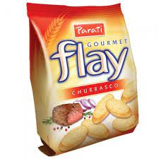
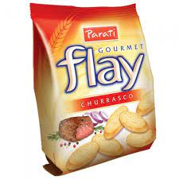
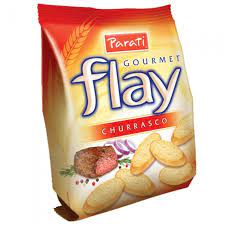

flay e um salgadinho crocante de varios sabores e o melho e churrasco
a muitos tipos de produtos na parati
exelplos pao de mel etc
e agora vamos continuar a falar sobre salgadinho
hot cracker,assa dinho,joker e aperitivo
sao biscoitos/bolachas de pasar o tempo ponden pasar a fome e sao crocantes

FUNÇÃO
produtos para toda familha de bolhachas a bolos de pascoa
HISTORIA
A Parati, empresa de origem familiar, foi fundada há 40 anos pelo imigrante italiano Angelo Fantin, que chegou ao Brasil com 22 anos de idade.
Disposto a encontrar um novo mundo, longe da Guerra, acreditou no Brasil, onde poderia encontrar oportunidades de trabalho e criar raízes, formando uma nova família e participar da construção de um grande país.
Desde sua fundação, a Parati vem escrevendo sua história ao apostar na alta qualidade de seus produtos, na excelência de sua prestação de serviços, na ética de seus negócios e, principalmente, em sua equipe de trabalho.
Em 2016, a Kellogg Company, centenária companhia norte-americana que também tem uma história sólida, pautada em valores e princípios, e marca que fabrica produtos emblemáticos, adquiriu a Parati, certa de estar somando a seus ativos estes importantes atributos.
Atualmente, os valores e o legado deixado por Angelo Fantin, ainda presentes na companhia, se unem aos valores construídos pelo fundador da Kellogg, W.K. Kellogg.
Com um time de milhares de colaboradores, mais de 100 mil metros quadrados de área construída, o site de São Lourenço do Oeste, em Santa Catarina, onde está sua fábrica, tornou-se um dos maiores complexos industriais da Kellogg no mundo.
![logo parati]()


 
